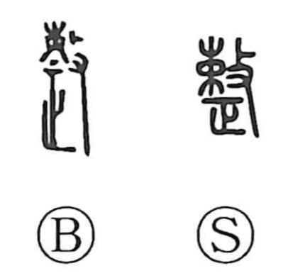

整

Kun: totonoeru, totonou | On: sei
to arrange ・ to put in order ・ to correct ・ to make ready
Explanation
Shirakawa reads 整 as a phono-semantic compound. It combines 敕 (later written 勅), which evoked the act of striking and bundling brushwood to make it uniform, with 正, “to make correct.” Here 正 also provides the on-reading sei, making it an ekisei, a co-phonetic in which the phonetic element carries meaning as well. From this imagery the original sense is to set what is uneven or irregular into order; over time it broadened to mean arranging and correcting what is out of line, bringing things into a proper, orderly state.